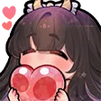

this page has been renovated in light of the recent reports surrounding the Third Maria's final decision to leave all applicable platforms to aid in her recovery.
logged 27 Jan 2024 5:40pm EST
Last Update. Thank chuunin
I think many of you know now, but I will leave this last update here.
I must take care of my family and my health. I did a lot of thinking,
working, taking care of my family.
I am healthier and stronger, it is because I left all social media in
this time. Leaving is what makes me focus on life and living.
I love chuu all. thank u for being next to me and with me. I hope my
time was helpful to you
and I wish the best for you forever and always. I will be safe now
with my family and in my home town finally.
This server will now close soon, I will be leaving everything now.
Thank u always. Love your queen, maid, neko, angel, sussy baka Hina  I love you and our memories together.
published 28 Jan 2024 11:42am PHT
to our Third Maria.
it’s been more than 2 years since I’ve been committed to making our dreams possible every step of the way. and all the while, we made lasting memories that will etch in our hearts forever.
the first time I met you on socials, I was just about to start my career as a vtuber after learning about what had happened to MIKENEKO (formerly Uruha Rushia) last Feb. from the first time that you streamed, it was an exhilarating experience at hand. every stream was memorable, and all the while, we have created a community unlike any other.
through your three debuts, I’ve learned about what makes you great, and what more possibilities could we possibly create for the future of vtubing. and despite all the circumstances, we braced through these with ease.
23 Jun 2022 saw an opportunity for us to foster our relationships with the community through meaningful experiences. I can still remember the day when I decided to take part that you said, “you being an overarching mod would be my dream”; and I devoted my life to it after the deliberations, making sure that the community is safe against all odds.
through all that experience, we gained so much momentum, and we passed along our legacies and memories to the community as we went along. that alone made me convinced the future is bright for us.
we braced through all the hurdles, faced the consequences; all while holding each other tight. and through many of these, we met new people that we can count on. communities that we can look forward to.
it has been these wonderful years that I realized that every moment that we had together was fun. and I still carry on those memories whenever I do creative works or moderate other vtubers. it pursued me to do something I’ve not completely done, and what I was supposed to do from the start since meeting you.
27 Dec 2022, and it has arrived. with a bit of dedication on my side, I decided to make a handwritten illust that will uphold our hearts into one Collective that strives to recognize the importance of universality at its core. who would’ve thought that a simple artwork could create such new memories together, eh?
but life isn’t that sweet at the end of the day, however. I’ve seen you struggle to find your common ground, but all the while, I continue to support you with everything that I can. sending you comforting messages, publishing wips, it has been an experience unlike any other.
but now, we’re here. after many trials and tribulations, it’s time to put everything to rest for good. I know it has been a painful experience, even for me; but I know that deep inside, there’s still a part of us that is willing to do whatever it takes to make everyone proud in our own ways. living a new life out of the previous will be hard, but I know that we can do it as long as our hearts are bound together -- set in stone for generations.
there will be some trouble ahead of you, but just know that with every struggle comes relief. with every step of the way, we found our common ground. and when one story ends, another one begins.
I hope that you’ve found peace in your heart and mind as you continue your recovery further. things will be hard, but I’m sure that your efforts will be rewarded. it may take a while to get used to the new life, but I’m in the mood to say that it’s all gonna be worth it in the end. I’m sure of it.
but for now, I would like to thank you -- personally -- for all the memories that we made and cherished. we may leave most of it behind, our most precious ones will be in our hearts beyond time. we know that we will meet each other again when the time comes, after every single thing has all settled down. who knows when that will happen, maybe years or decades? but hey, it’s a possibility!!
but I would like to sincerely thank you for what you’ve done to the community. your dedication to do something great is something that I’ve been catered to since meeting you and becoming a vtuber. it’s a once-in-a-lifetime opportunity that I won’t let pass, let alone miss out on it. it’s the legacy that we made together, and I’m now glad to hold it dearly in my heart for future generations.
to this, I formally close this letter with the following: I’m glad that I finally found my resolve and my desire to keep going with my life thanks to you. I’m sincerely thankful to be sharing these memories with you. and lastly, I’m truly honored to become the 💚🍃Aga-chuu💗🌸 that I am right now thanks to your care.
I am truly grateful to have always regarded you as the Third Maria. you will always be in our hearts forever.💗🌸